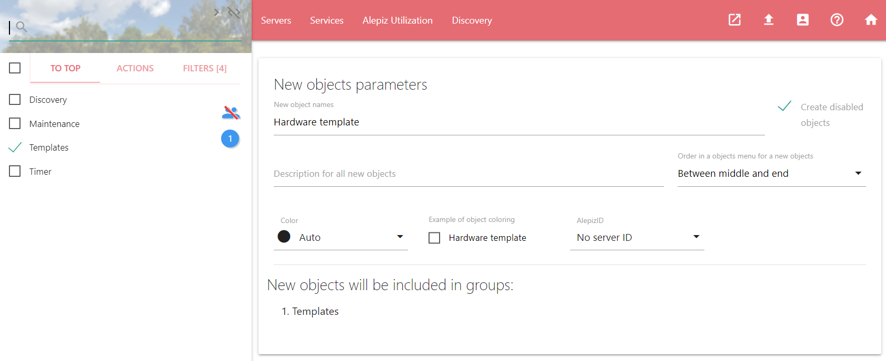
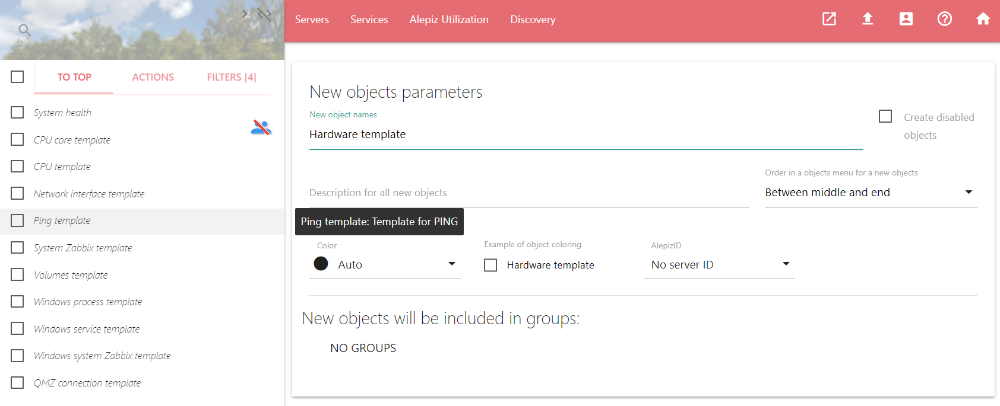
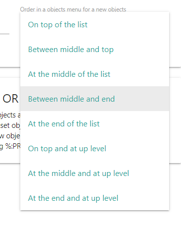
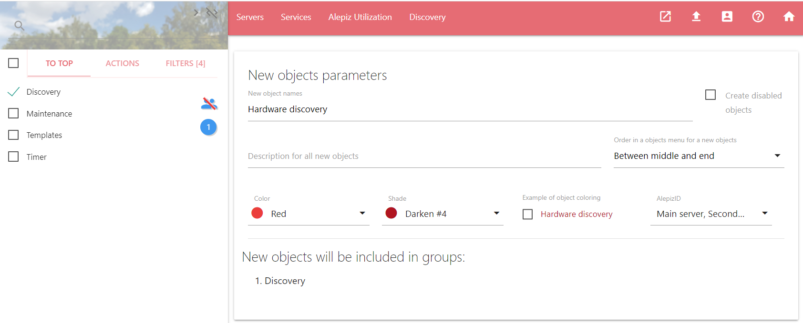

Возвращаемое значение: разделенные запятыми object ID (идентификаторы созданных объектов из базы данных).
Описание полей ввода
New object name
В это поле необходимо ввести имя нового объекта, либо несколько имен, разделенных запятыми. Все перечисленные объекты будут созданы и доступны в списке объектов. У каждого объекта должно быть свое уникальное имя: не может быть двух объектов с одинаковым именем. Все перечисленные ниже свойства для всех создаваемых объектов будут одинаковыми.
Create disabled object
Можно создать отключенный объект. В этом случае, после подключения к объекту счетчиков (counters), сбор данных производиться не будет. В списке объектов отключенные объекты обозначаются курсивом.
Description for all new objects
С помощью этого поля можно ввести описание для новых объектов. Подсказка с описанием объекта появится, если в списке объектов навести курсор на объект.
Order in a objects menu for a new objects
Поле позволяет установить сортировку, которая влияет на порядок отображения объектов в списке объектов. Если для объектов установлена одинаковая сортировка, они сортируются по алфавиту.
Объекты с разной сортировкой сортируются по следующим правилам:
Сортировка объектов, находящихся на верхнем уровне
Объекты с сортировкой из таблицы ниже будут располагаться на самом верхнем уровне списка объектов. Для того, чтобы увидеть эти объекты в списке нужно в списке объектов нажать на "TO TOP". Если эти объекты включить в группу, они также будут отображаться в этой группе.
| Сортировка | Описание |
|---|---|
| On top and at up level | На самом верху списка объектов и на самом верхнем уровне объектов |
| At the middle and at up level | В середине списка и на самом верхнем уровне объектов |
| At the end at up level | В конце списка и на самом верхнем уровне объектов |
Сортировка объектов, включенных в другие объекты
Объекты с сортировкой из таблицы ниже должны быть включены в какую-то группу. Для доступа к такому объекту необходимо в списке объектов зайти в группу объектов, в которой находится требуемый объект. Если такому объекту не присвоить никакую группу, объект невозможно будет найти с помощью навигации по списку объектов. В этом случае объект может быть отображен в списке только если ввести его имя в строке поиска объектов. Строка поиска объектов находится над системным меню Objects и активируется когда активна вкладка OBJECT.
| Сортировка | Описание |
|---|---|
| On top of the list | На самом верху списка объектов |
| Between middle and top | Между верхними объектами и объектами в середине списка |
| At the middle of the list | В середине списка объектов |
| Between middle and end | Между объектами в середине списка и объектами в конце списка |
| At the end of the list | Внизу списка объектов |
Groups for new objects
Для того, чтобы задать группы в которые будут включены новые объекты, необходимо их выбрать в списке объектов.
Color, Shade и Example of object coloring
С помощью Color и Shade можно задать цвет и оттенок этого цвета для нового объекта. Example of object coloring покажет, как будет выглядеть объект в списке объектов.
AlepizID
Используется для обозначения принадлежности объекта определенному серверу ALEPIZ. Данные для объекта будут собираться только на сервере, которому принадлежит объект. Можно использовать одну конфигурацию для несколько серверов ALEPIZ и с помощью этого свойства выбирать, какой из серверов будет собирать данные для объекта. Список всех идентификаторов находится в БД ALEPIZ. для текущего Alepiz идентификаторы можно указать в файле конфигурации Описание настроек Counter processor сервера server.json с помощью параметра AlepizNames.